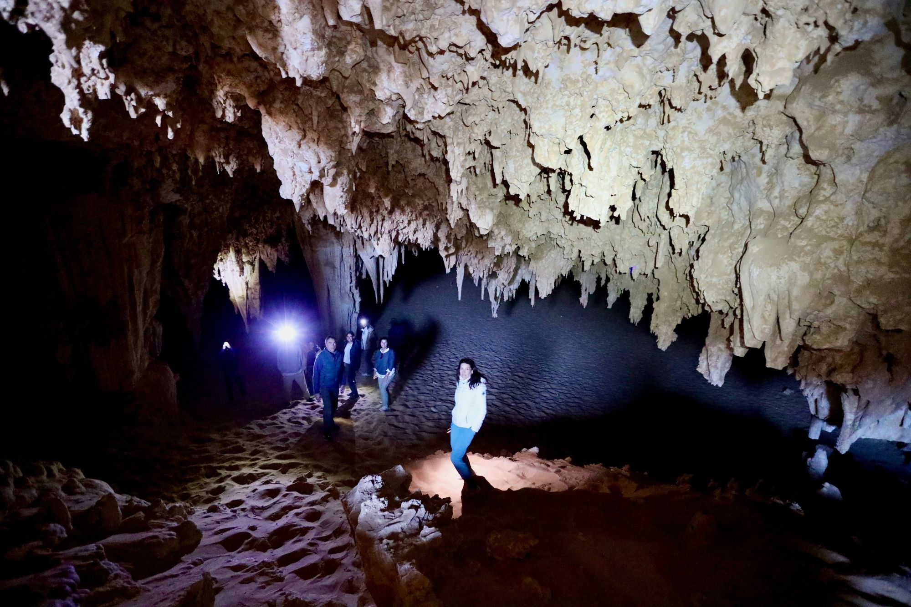

Día 01
Llegada a El Cairo
Recepción en el aeropuerto y traslado al hotel. Noche en El Cairo.

Una travesía de 11 días desde El Cairo por Bahariya, Farafra y Fayoum: el Desierto Blanco, el Gran Mar de Arena, la cueva de Djara, Wadi Hitan y los lagos de Fayoum.
El orden de los días puede cambiar con el tiempo, la arena y el grupo. La esencia de la ruta, no.

Recepción en el aeropuerto y traslado al hotel. Noche en El Cairo.

Guiza, Saqqara, el Gran Museo Egipcio y comida. Tarde libre y paseo por la ciudad.

Microbús hasta Bahariya, cambio a 4×4 en El Heiz, Montaña de Cristal y entrada al Desierto Blanco por Agabat. Tiendas para dos.

Amanecer, dunas de Agabat, baño y té en Bir Khadra. Acampada en un valle al borde del Gran Mar de Arena.
Hacia el macizo de Abu Said, comida en la meseta y noche en Sand Gate Camp.

Paseo por el oasis, comida en Bir Mahmoud I y baño en la fuente termal.

Montañas de Shaw Shaw, comida y visita a la cueva de Djara. Acampada en las dunas de Muharriq.

Un día entero en 4×4 cruzando las dunas de Abu Muharriq de sur a norte. Acampada cerca de Darb el-Rayan.

Wadi Hitan, el Valle de las Ballenas, con su museo y sus fósiles. Noche de hotel en Wadi Rayan.

Visita matinal a Wadi Rayan, comida junto al lago y microbús hasta El Cairo.

Desayuno y traslado al aeropuerto de El Cairo.
El precio depende del tamaño del grupo y de la temporada. Los servicios definitivos se confirman en tu presupuesto.
Qué esperar sobre el terreno.
De octubre a abril, con días templados y noches frescas.
Viajeros con buena salud general. No hace falta experiencia técnica.
Tiendas para dos, esterillas y cocina de campaña. Trae una capa de abrigo.
GPS y teléfono satélite en cada vehículo; guías beduinos con experiencia.
Amaneceres, atardeceres y cielos estrellados. Trae baterías de repuesto.
Mándanos tus fechas y viajeros y te respondemos con un presupuesto.
Cuéntanos tus fechas y el número de viajeros. Te confirmamos disponibilidad y te enviamos el presupuesto personalmente.

O sigue hacia el sur: los valles de Dabadib, las fortalezas romanas, el templo de Hibis y El-Bagawat.